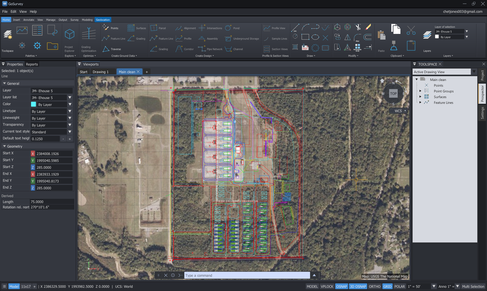
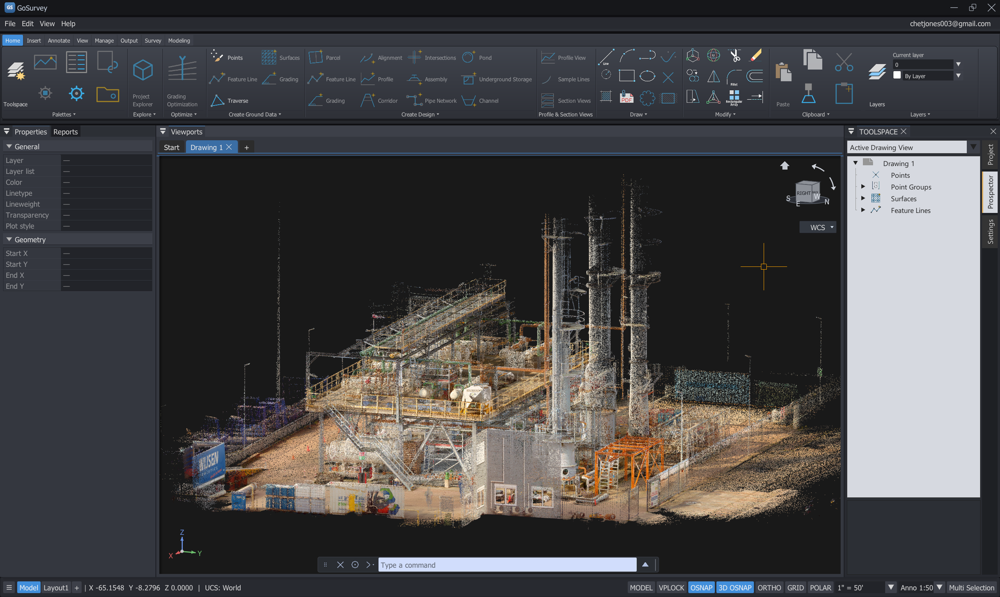

Get to work…
that’s it
A fast, modern CAD platform built for surveyors — bearings and distances, traverse adjustment, points, surfaces, and PDF viewing/editing.
Linework · Geolocation · Surfaces · Point Clouds · Alignments
Point cloud import
E57 and LAS scans, colorized and ready to trace
Surfaces & grading
Build TIN surfaces straight from survey points
Alignments & corridors
Profile views and corridor design built in
3D modeling
Solids, pipe runs, and fittings in true 3D
Geolocation
Drawings pinned to real coordinates and maps
Native DWG/DXF
Open and save real AutoCAD files, no converter



GoSurvey is built mainly by me and whoever is kind enough to contribute.
It is open source free to use software and as such is depended upon by the help of others. Feel free to help contribute in command implementation, file-format compatibility, testing, documentation, UI/UX, website design, issue triage, or simply by giving me input and feedback.
Currently this project is funded solely by my own means. If you feel the need or want to donate please reach out to me for now — I am working on adding ways to contribute financially.